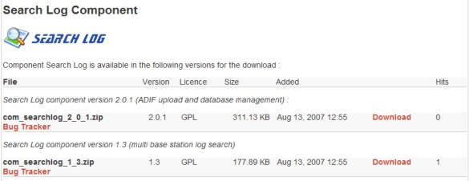
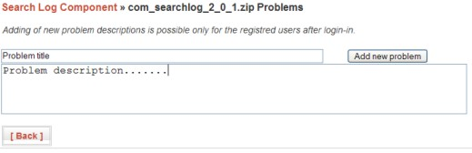
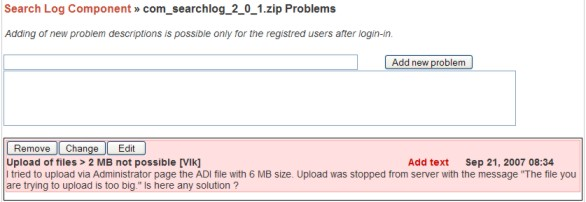

Nutzung
JotLoader ermöglicht es, auf einer Joomla Web Site Download-Dateien in einem angemessenen Layout zum Herunterladen bereitzustellen. Die Dateien können in Kategorien mit eigener Beschreibung und wählbarem Layout gruppiert werden. Zu jeder Download-Datei lässt sich einen Bug Tracker (Problem Verfolgung) aktivieren, über den registrierte Benutzer Problembeschreibungen und Kommentare zu einem Download berichten können. Web Site Administratoren können im Frontend die Textbeschreibungen bearbeiten/ergänzen/löschen so wie auch den Problemstatus (in Bearbeitung/gelöst) ändern.
Frontend
Jede Kategorie der Download-Dateien wird im Frontend als kompakte Tabelle mit Kategorie Titel, Beschreibung und allen freigegebenen Dateien jeweils mit der individuellen Beschreibung gezeigt. Das Aussehen und die Zusammensetzung der Tabelle kann im Backend leicht an die persönlichen Wünsche oder das Design der Website angepasst werden.

Zum Herunterladen der Dateien genügt einfaches Anklicken der Download-Links.
Bug Tracker
Beim Auftreten von Problemen können registrierte Benutzer nach erfolreichem Login Fehler- oder andere Hinweise eingeben.
Nach dem Hinzufügen einer neuen Problembeschreibung ist diese im Bug Tracker in rosa Farbe als ein Problem in Bearbeitung dargestellt. Registrierte Benutzer können auch weitere Bemerkungen zur Problembeschreibung per "Add text" Link anfügen.
Für einen Web Site Administrator stehen zusätzlich die Funktionen